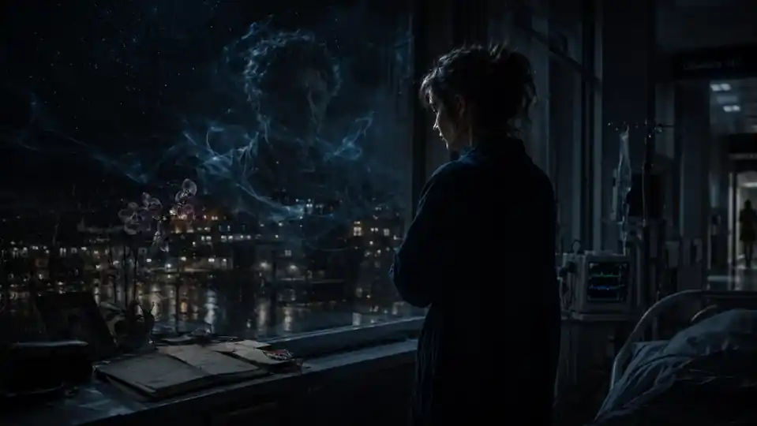

PIÈCE A / LIVRE À LA DEMANDE
« Nous sommes en train de générer votre livre. »
Dans le roman, une borne jaune paramètre puis génère un ouvrage pour son lecteur.
2026 → Générer un texte sur commande ne relève plus de l'anticipation.
Thomas Judes · roman
Le roman que le réel a rattrapé.
Écrit en 2016–2017. Autoédité en 2018. Entièrement réécrit en 2026.
« Et si votre mémoire était la scène du crime ? »
01 / LE ROMAN
Martin Protus est écrivain. Il souffre d'amnésie partielle, d'hallucinations et de trous noirs. Quand son éditrice l'accuse de plagier des romans déjà publiés par Robotiques, une entreprise qui produit industriellement des livres grâce à des systèmes d'écriture automatisée, il envisage l'hypothèse la plus terrible : et s'il était lui-même le plagiaire ?
Sa propre conscience devient une scène de crime. Puis les horodatages prouvent l'impossible : quelqu'un accède réellement à ses textes et les exploite avant même qu'il ne les envoie.

Chez Martin, le doute n'est jamais une simple fausse piste : sa maladie est réelle, tout comme la manipulation dont il est victime.

Derrière le thriller technologique, une histoire de deuil, de culpabilité et de transmission.

Le roman travaille la frontière entre ce qui a eu lieu, ce qui est raconté et ce que quelqu'un veut vous faire croire.
« Je ne sais plus si je me souviens de ce que j'ai vécu, ou de ce que j'ai écrit. »
02 / 2016 → 2026
Le sujet n'est pas de prétendre que le roman avait « tout vu ». Il suffit de regarder ce qu'il mettait déjà en scène avant l'irruption publique de l'IA générative — puis ce qui est devenu banal dix ans plus tard.
PIÈCE A / LIVRE À LA DEMANDE
« Nous sommes en train de générer votre livre. »
Dans le roman, une borne jaune paramètre puis génère un ouvrage pour son lecteur.
2026 → Générer un texte sur commande ne relève plus de l'anticipation.PIÈCE B / « À LA MANIÈRE DE »
Une machine capable de produire une histoire « comme Martin Protus ».
Un auteur devient un corpus, une signature reproductible, une matière statistique.
2026 → Style, corpus, consentement et droit d'auteur sont devenus des conflits réels.PIÈCE C / CAPTATION
Robotiques absorbe idées, brouillons, styles et corrections humaines.
Le thriller pose déjà la question de la propriété d'une voix quand la machine apprend du travail des autres.
2026 → La fiction a changé de statut : elle ressemble à un débat contemporain.La fiche de génération faisait déjà partie de l'univers du roman.
03 / LA FICTION DEVIENT INTERFACE
Dans le livre, le lecteur s'approche d'une borne jaune et commande son prochain roman. En 2026, cette fiction peut enfin devenir une expérience.
BIENVENUE CHEZ ROBOTIQUES
04 / VERSION 2026
La première version d'Authentiques Victimes a été écrite puis autoéditée avant que l'IA générative ne s'installe dans le quotidien. En 2026, le texte a été repris de fond en comble : structure resserrée, personnages renforcés, enjeux humains approfondis.
Ce qui était anticipation technologique est désormais le décor. Le cœur du livre reste ailleurs : qui possède une histoire, une mémoire, une voix ?
Journaliste, éditeur, producteur — ou simplement intrigué ?
thomas.judes@gmail.com ↗